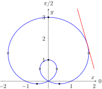

Section 10.5 Calculus and Polar Functions
The previous section defined polar coordinates, leading to polar functions. We investigated plotting these functions and solving a fundamental question about their graphs, namely, where do two polar graphs intersect?
We now turn our attention to answering other questions, whose solutions require the use of calculus. A basis for much of what is done in this section is the ability to turn a polar function \(r=f(\theta)\) into a set of parametric equations. Using the identities \(x=r\cos(\theta)\) and \(y=r\sin(\theta)\text{,}\) we can create the parametric equations \(x=f(\theta)\cos(\theta)\text{,}\) \(y=f(\theta)\sin(\theta)\) and apply the concepts of Section 10.3.
Subsection 10.5.1 Polar Functions and \(dy/dx\)
We are interested in the lines tangent to a given graph, regardless of whether that graph is produced by rectangular, parametric, or polar equations. In each of these contexts, the slope of the tangent line is \(\frac{dy}{dx}\text{.}\) Given \(r=f(\theta)\text{,}\) we are generally not concerned with \(r\,'=\fp(\theta)\text{;}\) that describes how fast \(r\) changes with respect to \(\theta\text{.}\) Instead, we will use \(x=f(\theta)\cos(\theta)\text{,}\) \(y=f(\theta)\sin(\theta)\) to compute \(\frac{dy}{dx}\text{.}\)
Using Key Idea 10.3.2 we have
Each of the two derivatives on the right hand side of the equality requires the use of the Product Rule. We state the important result as a Key Idea.
Key Idea 10.5.2. Finding \(\frac{dy}{dx}\) with Polar Functions.
Let \(r=f(\theta)\) be a polar function. With \(x=f(\theta)\cos(\theta)\) and \(y=f(\theta)\sin(\theta)\text{,}\)
Example 10.5.3. Finding \(\frac{dy}{dx}\) with polar functions.
Consider the limaçon \(r=1+2\sin(\theta)\) on \([0,2\pi]\text{.}\)
Find the equations of the tangent and normal lines to the graph at \(\theta=\pi/4\text{.}\)
Find where the graph has vertical and horizontal tangent lines.
-
We start by computing \(\frac{dy}{dx}\text{.}\) With \(\fp(\theta) = 2\cos(\theta)\text{,}\) we have
\begin{align*} \frac{dy}{dx} \amp = \frac{2\cos(\theta) \sin(\theta) + \cos(\theta) (1+2\sin(\theta) )}{2\cos^2(\theta) -\sin(\theta) (1+2\sin(\theta) )}\\ \amp = \frac{\cos(\theta) (4\sin(\theta) +1)}{2(\cos^2(\theta) -\sin^2(\theta) )-\sin(\theta) }\text{.} \end{align*}When \(\theta=\pi/4\text{,}\) \(\frac{dy}{dx}=-2\sqrt{2}-1\) (this requires a bit of simplification). In rectangular coordinates, the point on the graph at \(\theta=\pi/4\) is \((1+\sqrt{2}/2,1+\sqrt{2}/2)\text{.}\) Thus the rectangular equation of the line tangent to the limaçon at \(\theta=\pi/4\) is
\begin{equation*} y=(-2\sqrt{2}-1)\big(x-(1+\sqrt{2}/2)\big)+1+\sqrt{2}/2 \approx -3.83 x+8.24\text{.} \end{equation*}The limaçon and the tangent line are graphed in Figure 10.5.4. The normal line has the opposite-reciprocal slope as the tangent line, so its equation is
\begin{equation*} y \approx \frac{1}{3.83}x+1.26\text{.} \end{equation*}Figure 10.5.4. The limaçon in Example 10.5.3 with its tangent line at \(\theta=\pi/4\) and points of vertical and horizontal tangency -
To find the horizontal lines of tangency, we find where \(\frac{dy}{dx}=0\text{;}\) thus we find where the numerator of our equation for \(\frac{dy}{dx}\) is 0.
\begin{equation*} \cos(\theta) (4\sin(\theta) +1)=0 \Rightarrow \cos(\theta) =0 \text{ or } 4\sin(\theta) +1=0\text{.} \end{equation*}On \([0,2\pi]\text{,}\) \(\cos(\theta) =0\) when \(\theta=\pi/2,\,3\pi/2\text{.}\) Setting \(4\sin(\theta) +1=0\) gives \(\theta=\sin^{-1}(-1/4)\approx -0.2527 = -14.48^\circ\text{.}\) We want the results in \([0,2\pi]\text{;}\) we also recognize there are two solutions, one in the third quadrant and one in the fourth. Using reference angles, we have our two solutions as \(\theta =3.39\) and \(6.03\) radians. The four points we obtained where the limaçon has a horizontal tangent line are given in Figure 10.5.4 with black-filled dots. To find the vertical lines of tangency, we set the denominator of \(\frac{dy}{dx}=0\text{.}\)
\begin{align*} 2(\cos^2(\theta) -\sin^2(\theta) )-\sin(\theta) \amp = 0 .\\ \end{align*}Convert the \(\cos^2(\theta)\) term to \(1-\sin^2(\theta)\text{:}\)
\begin{align*} 2(1-\sin^2(\theta) -\sin^2(\theta) )-\sin(\theta) \amp = 0\\ 4\sin^2(\theta) + \sin(\theta) -2 \amp = 0.\\ \end{align*}Recognize this as a quadratic in the variable \(\sin(\theta)\text{.}\) Using the quadratic formula, we have
\begin{align*} \sin(\theta) \amp = \frac{-1\pm\sqrt{33}}{8}\text{.} \end{align*}We solve \(\sin(\theta) = \frac{-1+\sqrt{33}}8\) and \(\sin(\theta) = \frac{-1-\sqrt{33}}8\text{:}\)
\begin{align*} \sin(\theta) \amp =\frac{-1+\sqrt{33}}8 \amp \sin(\theta) \amp = \frac{-1-\sqrt{33}}{8}\\ \theta \amp = \sin^{-1}\left(\frac{-1+\sqrt{33}}8\right) \amp \theta \amp = \sin^{-1}\left(\frac{-1-\sqrt{33}}8\right)\\ \theta \amp = 0.6349 \amp \theta \amp = -1.0030 \end{align*}In each of the solutions above, we only get one of the possible two solutions as \(\sin^{-1}(x)\) only returns solutions in \([-\pi/2,\pi/2]\text{,}\) the \(4\)th and \(1\)st quadrants. Again using reference angles, we have:
\begin{equation*} \sin\theta = \frac{-1+\sqrt{33}}8 \Rightarrow \theta = 0.6349,\,2.5067 \text{ radians } \end{equation*}and
\begin{equation*} \sin(\theta) = \frac{-1-\sqrt{33}}8 \Rightarrow \theta = 4.1446,\,5.2802 \text{ radians. } \end{equation*}These points are also shown in Figure 10.5.4 with white-filled dots.
When the graph of the polar function \(r=f(\theta)\) intersects the pole, it means that \(f(\alpha)=0\) for some angle \(\alpha\text{.}\) Thus the formula for \(\frac{dy}{dx}\) in such instances is very simple, reducing simply to
This equation makes an interesting point. It tells us the slope of the tangent line at the pole is \(\tan\alpha\text{;}\) some of our previous work (see, for instance, Example 10.4.9) shows us that the line through the pole with slope \(\tan\alpha\) has polar equation \(\theta=\alpha\text{.}\) Thus when a polar graph touches the pole at \(\theta=\alpha\text{,}\) the equation of the tangent line at the pole is \(\theta=\alpha\text{.}\)
Example 10.5.5. Finding tangent lines at the pole.
Let \(r=1+2\sin(\theta)\text{,}\) a limaçon. Find the equations of the lines tangent to the graph at the pole.
We need to know when \(r=0\text{.}\)
Thus the equations of the tangent lines, in polar, are \(\theta = 7\pi/6\) and \(\theta = 11\pi/6\text{.}\) In rectangular form, the tangent lines are \(y=\tan(7\pi/6)x\) and \(y=\tan(11\pi/6)x\text{.}\) The full limaçon can be seen in Figure 10.5.4; we zoom in on the tangent lines in Figure 10.5.6.
Subsection 10.5.2 Area
When using rectangular coordinates, the equations \(x=h\) and \(y=k\) defined vertical and horizontal lines, respectively, and combinations of these lines create rectangles (hence the name “rectangular coordinates”). It is then somewhat natural to use rectangles to approximate area as we did when learning about the definite integral.
When using polar coordinates, the equations \(\theta=\alpha\) and \(r=c\) form lines through the origin and circles centered at the origin, respectively, and combinations of these curves form sectors of circles. It is then somewhat natural to calculate the area of regions defined by polar functions by first approximating with sectors of circles.
Consider Figure 10.5.7.(a) where a region defined by \(r=f(\theta)\) on \([\alpha,\beta]\) is given. (Note how the “sides” of the region are the lines \(\theta=\alpha\) and \(\theta=\beta\text{,}\) whereas in rectangular coordinates the “sides” of regions were often the vertical lines \(x=a\) and \(x=b\text{.}\))
Partition the interval \([\alpha,\beta]\) into \(n\) equally spaced subintervals as \(\alpha = \theta_0 \lt \theta_1 \lt \cdots \lt \theta_{n}=\beta\text{.}\) The length of each subinterval is \(\Delta\theta = (\beta-\alpha)/n\text{,}\) representing a small change in angle. The area of the region defined by the \(i\)th subinterval \([\theta_{i-1},\theta_{i}]\) can be approximated with a sector of a circle with radius \(f(c_i)\text{,}\) for some \(c_i\) in \([\theta_{i-1},\theta_{i}]\text{.}\) The area of this sector is \(\frac12f(c_i)^2\Delta\theta\text{.}\) This is shown in Figure 10.5.7.(b), where \([\alpha,\beta]\) has been divided into 4 subintervals. We approximate the area of the whole region by summing the areas of all sectors:
This is a Riemann sum. By taking the limit of the sum as \(n\to\infty\text{,}\) we find the exact area of the region in the form of a definite integral.
Theorem 10.5.9. Area of a Polar Region.
Let \(f\) be continuous and non-negative on \([\alpha,\beta]\text{,}\) where \(0\leq \beta-\alpha\leq 2\pi\text{.}\) The area \(A\) of the region bounded by the curve \(r=f(\theta)\) and the lines \(\theta=\alpha\) and \(\theta=\beta\) is
The theorem states that \(0\leq \beta-\alpha\leq 2\pi\text{.}\) This ensures that region does not overlap itself, which would give a result that does not correspond directly to the area.
Example 10.5.10. Area of a polar region.
Find the area of the circle defined by \(r=\cos(\theta)\text{.}\) (Recall this circle has radius \(1/2\text{.}\))
This is a direct application of Theorem 10.5.9. The circle is traced out on \([0,\pi]\text{,}\) leading to the integral
Of course, we already knew the area of a circle with radius \(1/2\text{.}\) We did this example to demonstrate that the area formula is correct.
Example 10.5.11. Area of a polar region.
Find the area of the cardioid \(r=1+\cos(\theta)\) bound between \(\theta=\pi/6\) and \(\theta=\pi/3\text{,}\) as shown in Figure 10.5.12.
This is again a direct application of Theorem 10.5.9.
Area Between Curves.
Our study of area in the context of rectangular functions led naturally to finding area bounded between curves. We consider the same in the context of polar functions.
Consider the shaded region shown in Figure 10.5.13. We can find the area of this region by computing the area bounded by \(r_2=f_2(\theta)\) and subtracting the area bounded by \(r_1=f_1(\theta)\) on \([\alpha,\beta]\text{.}\) Thus
Key Idea 10.5.14. Area Between Polar Curves.
The area \(A\) of the region bounded by \(r_1=f_1(\theta)\) and \(r_2=f_2(\theta)\text{,}\) \(\theta=\alpha\) and \(\theta=\beta\text{,}\) where \(f_1(\theta)\leq f_2(\theta)\) on \([\alpha,\beta]\text{,}\) is
Example 10.5.15. Area between polar curves.
Find the area bounded between the curves \(r=1+\cos(\theta)\) and \(r=3\cos(\theta)\text{,}\) as shown in Figure 10.5.16.
We need to find the points of intersection between these two functions. Setting them equal to each other, we find:
Thus we integrate \(\frac12\big((3\cos(\theta) )^2-(1+\cos(\theta) )^2\big)\) on \([-\pi/3,\pi/3]\text{.}\)
Amazingly enough, the area between these curves has a “nice” value.
Example 10.5.17. Area defined by polar curves.
Find the area bounded between the polar curves \(r=1\) and \(r=2\cos(2\theta)\text{,}\) as shown in Figure 10.5.18.
We need to find the point of intersection between the two curves. Setting the two functions equal to each other, we have
In Figure 10.5.19, we zoom in on the region and note that it is not really bounded between two polar curves, but rather by two polar curves, along with \(\theta=0\text{.}\) The dashed line breaks the region into its component parts. Below the dashed line, the region is defined by \(r=1\text{,}\) \(\theta=0\) and \(\theta = \pi/6\text{.}\) (Note: the dashed line lies on the line \(\theta=\pi/6\text{.}\)) Above the dashed line the region is bounded by \(r=2\cos(2\theta)\) and \(\theta =\pi/6\text{.}\) Since we have two separate regions, we find the area using two separate integrals.
Call the area below the dashed line \(A_1\) and the area above the dashed line \(A_2\text{.}\) They are determined by the following integrals:
(The upper bound of the integral computing \(A_2\) is \(\pi/4\) as \(r=2\cos(2\theta)\) is at the pole when \(\theta=\pi/4\text{.}\))
We omit the integration details and let the reader verify that \(A_1 = \pi/12\) and \(A_2 = \pi/12-\sqrt{3}/8\text{;}\) the total area is \(A = \pi/6-\sqrt{3}/8\text{.}\)
Subsection 10.5.3 Arc Length
As we have already considered the arc length of curves defined by rectangular and parametric equations, we now consider it in the context of polar equations. Recall that the arc length \(L\) of the graph defined by the parametric equations \(x=f(t)\text{,}\) \(y=g(t)\) on \([a,b]\) is
Now consider the polar function \(r=f(\theta)\text{.}\) We again use the identities \(x=f(\theta)\cos(\theta)\) and \(y=f(\theta)\sin(\theta)\) to create parametric equations based on the polar function. We compute \(x'(\theta)\) and \(y'(\theta)\) as done before when computing \(\frac{dy}{dx}\text{,}\) then apply Equation (10.5.1).
The expression \(x'(\theta)^2+y'(\theta)^2\) can be simplified a great deal; we leave this as an exercise and state that
This leads us to the arc length formula.
Theorem 10.5.20. Arc Length of Polar Curves.
Let \(r=f(\theta)\) be a polar function with \(\fp\) continuous on \([\alpha,\beta]\text{,}\) on which the graph traces itself only once. The arc length \(L\) of the graph on \([\alpha,\beta]\) is
Example 10.5.21. Arc length of a limaçon.
Find the arc length of the limaçon \(r=1+2\sin(t)\text{.}\)
With \(r=1+2\sin(t)\text{,}\) we have \(r\,' = 2\cos(t)\text{.}\) The limaçon is traced out once on \([0,2\pi]\text{,}\) giving us our bounds of integration. Applying Theorem 10.5.20, we have
The final integral cannot be solved in terms of elementary functions, so we resorted to a numerical approximation. (Simpson's Rule, with \(n=4\text{,}\) approximates the value with \(13.0608\text{.}\) Using \(n=22\) gives the value above, which is accurate to 4 places after the decimal.)
Subsection 10.5.4 Surface Area
The formula for arc length leads us to a formula for surface area. The following Theorem is based on Theorem 10.3.21.
Theorem 10.5.23. Surface Area of a Solid of Revolution.
Consider the graph of the polar equation \(r=f(\theta)\text{,}\) where \(\fp\) is continuous on \([\alpha,\beta]\text{,}\) on which the graph does not cross itself.
-
The surface area of the solid formed by revolving the graph about the initial ray (\(\theta=0\)) is:
\begin{equation*} \text{ Surface Area } = 2\pi\int_\alpha^\beta f(\theta)\sin(\theta)\sqrt{\fp(\theta)^2+f(\theta)^2}\, d\theta\text{.} \end{equation*} -
The surface area of the solid formed by revolving the graph about the line \(\theta=\pi/2\) is:
\begin{equation*} \text{ Surface Area } = 2\pi\int_\alpha^\beta f(\theta)\cos(\theta)\sqrt{\fp(\theta)^2+f(\theta)^2}\, d\theta\text{.} \end{equation*}
Example 10.5.24. Surface area determined by a polar curve.
Find the surface area formed by revolving one petal of the rose curve \(r=\cos(2\theta)\) about its central axis, as shown in Figure 10.5.25.
We choose, as implied by the figure, to revolve the portion of the curve that lies on \([0,\pi/4]\) about the initial ray. Using Theorem 10.5.23 and the fact that \(\fp(\theta) = -2\sin(2\theta)\text{,}\) we have
The integral is another that cannot be evaluated in terms of elementary functions. Simpson's Rule, with \(n=4\text{,}\) approximates the value at \(1.36751\text{.}\)
This chapter has been about curves in the plane. While there is great mathematics to be discovered in the two dimensions of a plane, we live in a three dimensional world and hence we should also look to do mathematics in 3D — that is, in space. The next chapter begins our exploration into space by introducing the topic of vectors, which are incredibly useful and powerful mathematical objects.
Exercises 10.5.5 Exercises
Terms and Concepts
1.
Given polar equation \(r=f(\theta)\text{,}\) how can one create parametric equations of the same curve?
2.
With rectangular coordinates, it is natural to approximate area with ; with polar coordinates, it is natural to approximate area with .
Problems
Exercise Group.
Find \(\lz{y}{x}\) (in terms of \(\theta\)). Then find the equations of the tangent and normal lines to the curve at the indicated \(\theta\)-value.
3.
\(r=1\text{,}\) \(\theta=\pi/4\)
4.
\(r=\cos(\theta)\text{,}\) \(\theta=\pi/4\)
5.
\(r=1+\sin(\theta)\text{,}\) \(\theta = \pi/6\)
6.
\(\ds r=1-3\cos(\theta)\text{,}\) \(\theta = 3\pi/4\)
7.
\(r=\theta\text{,}\) \(\theta=\pi/2\)
8.
\(r=\cos(3\theta)\text{,}\) \(\theta=\pi/6\)
9.
\(r=\sin(4\theta)\text{,}\) \(\theta=\pi/3\)
10.
\(\ds r=\frac1{\sin(\theta) -\cos(\theta) }\text{;}\)\(\theta = \pi\)
Exercise Group.
Find the values of \(\theta\) in the given interval where the graph of the polar function has horizontal and vertical tangent lines.
11.
\(\ds r=3\text{;}\) \([0,2\pi]\)
12.
\(\ds r=2\sin(\theta)\text{;}\) \([0,\pi]\)
13.
\(\ds r=\cos(2\theta)\text{;}\) \([0,2\pi]\)
14.
\(r=1+\cos(\theta)\text{;}\) \([0, 2\pi)\)
Exercise Group.
Find the equation of the lines tangent to the graph at the pole.
15.
\(\ds r=\sin(\theta)\text{;}\)\([0,\pi]\)
16.
\(\ds r=\sin(3\theta)\text{;}\)\([0,\pi]\)
Exercise Group.
Find the area of the described region.
17.
Enclosed by the circle: \(\ds r=4\sin(\theta)\)
18.
Enclosed by the circle \(\ds r=5\)
19.
Find the area enclosed by one petal of \(r=\sin(3\theta)\text{.}\)
20.
Enclosed by one petal of the rose curve \(r=\cos (n\,\theta)\text{,}\) where \(n\) is a positive integer.
21.
Find the area enclosed by the cardioid \(r=1-\sin(\theta)\text{.}\)
22.
Enclosed by the inner loop of the limacon \(\ds r=1+2\cos(\theta)\)
23.
Find the area enclosed by the outer loop of the limacon \(r=1+2\cos(\theta)\) (including area enclosed by the inner loop).
24.
Find the area enclosed between the inner and outer loop of the limacon \(r=1+2\cos(\theta)\text{.}\)
25.
Find the area enclosed by \(r=2\cos(\theta)\text{,}\) \(r=2\sin(\theta)\text{,}\) and the \(x\)-axis, as shown:
The area is .
26.
Find the area enclosed by \(r=\cos(\theta)\) and \(r=\sin(2\theta)\text{,}\) as shown:
The area is .
27.
Enclosed by \(r=\cos(3 \theta)\) and \(r=\sin(3\theta)\text{.}\)
28.
Enclosed by \(r=\cos(\theta)\) and \(r=1-\cos(\theta)\text{.}\)
Exercise Group.
In the following exercises, answer the questions involving arc length.
29.
Use the arc length formula to compute the arc length of the circle \(r=2\text{.}\)
30.
Use the arc length formula to compute the arc length of the circle \(r=4\sin(\theta)\text{.}\)
31.
Use the arc length formula to compute the arc length of \(r=\cos \theta+\sin \theta\text{.}\)
32.
Use the arc length formula to compute the arc length of the cardioid \(r=1+\cos\theta\text{.}\) (Hint: apply the formula, simplify, then use a Power-Reducing Formula to convert \(1+\cos \theta\) into a square.)
33.
Approximate the arc length of one petal of the rose curve \(r=\sin(3\theta)\) with Simpson’s Rule and \(n=4\text{.}\)
34.
Let \(x(\theta) = f(\theta)\cos(\theta)\) and \(y(\theta)=f(\theta)\sin(\theta)\text{.}\) Show, as suggested by the text, that
Exercise Group.
In the following exercises, answer the questions involving surface area.
35.
Use Theorem 10.5.23 to find the surface area of the sphere formed by revolving the circle \(r=2\) about the initial ray.
36.
Use Theorem 10.5.23 to find the surface area of the sphere formed by revolving the circle \(r=2\cos(\theta)\) about the initial ray.
37.
Find the surface area of the solid formed by revolving the cardioid \(r=1+\cos(\theta)\) about the initial ray.
38.
Find the surface area of the solid formed by revolving the circle \(r=2\cos(\theta)\) about the line \(\theta=\pi/2\text{.}\)
39.
Find the surface area of the solid formed by revolving the line \(r=3\sec(\theta)\text{,}\) \(-\pi/4\leq\theta\leq\pi/4\text{,}\) about the line \(\theta=\pi/2\text{.}\)
40.
Find the surface area of the solid formed by revolving the line \(r=3\sec\theta\text{,}\) \(0\leq\theta\leq\pi/4\text{,}\) about the initial ray.